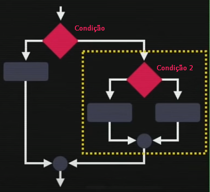
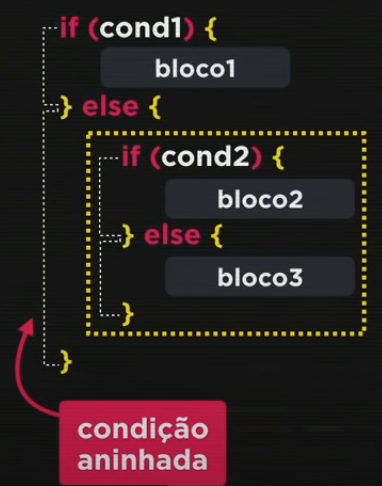
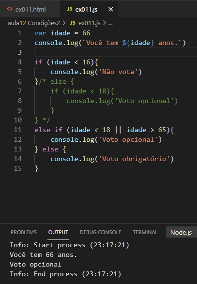
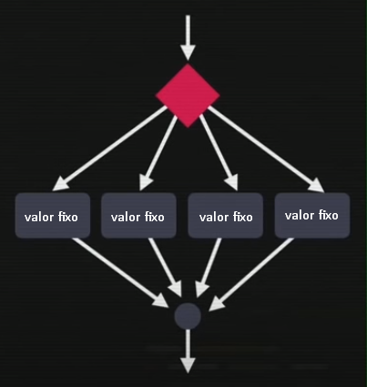
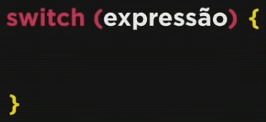
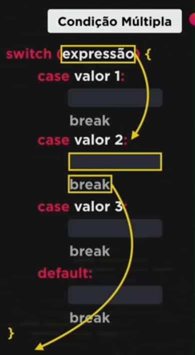
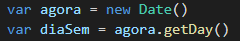
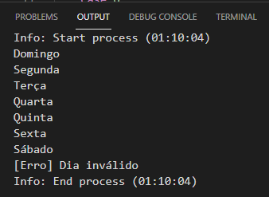
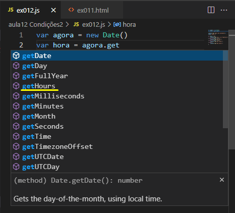
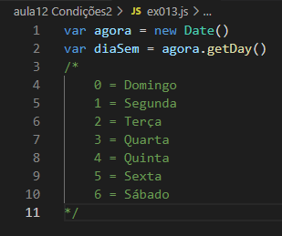

Pegamos uma condição composta e colocamos mais condições dentro dela. Se for verdade segue um caminho, se não vai pra outra condição.
Se atender a condição 1 o bloco1 irá acontecer, se não ele irá fazer outra condição. Observe que só executa o bloco2 se a primeira for falsa. Então no final fica: se a condição um for falsa, se a condição dois for falsa, então irá atender a condição 3.
Exemplo:
A condição múltipla serve para valores fixos.
O comando switch não é um condição, é uma expressão.
O default é como se fosse o else, se não for nenhum dos valores dos case então ele aplica o default. IMPORTANTE: dentro dessa estrutura preciso colocar o break no final de cada case.
Se a expressão resultar no valor 2 então irá ser executado os comandos que estiverem nesse case. No final ele bate no break e é desviado lá pra baixo.
No exemplo abaixo usamos o switch em vez de if (diaSem == 0){}. Se usassemos o if o código ia ficar muito grande e iria dar mais trabalho pra digitar, por isso em casos como esse podemos usar o switch.
Sem o break ele escreve do número escolhido em diante (hoje aqui é domingo, 0):
Se precisarmos usar intervalos de valores, é muito masi interessante usar os if. O switch é bom para testar valores pontuais, específicos (Funciona com strings também. Ex: case 'texto').
Podemos pegar a hora/ dias/anos/ etc do sistema que ta rodando. (No caso pra hora usamos getHours( ) )
Dias da semana - ordem:
Conselho: Logo após escrever o código no Visual Code, apertem "Alt+Shift+F". Isso vai deixar o código arrumadinho